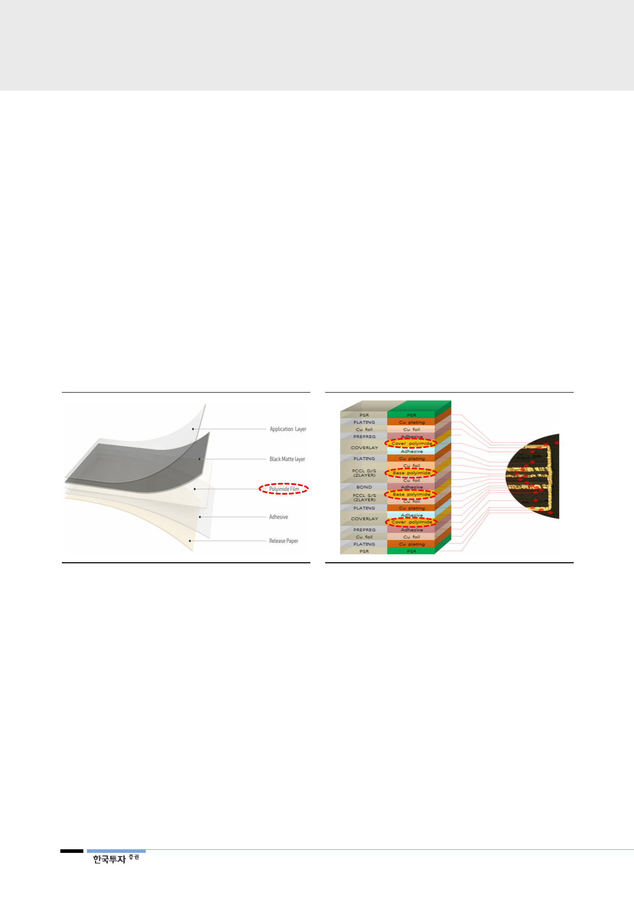

FPCB의 스펙 업그레이드:
다층 FCCL
FPCB 자체의 스펙 업그레이드도 진행되고 있다. FPCB의 성능을 향상하려면, 회
로를 그릴 수 있는 FCCL의 동박(copper foil) 층 수를 증가시켜야 해 FCCL을
여러장 사용하여야 한다. PI필름은 동박 층 간에 간섭을 막고 지지해 주는 역할이
므로 동박 층 수 증가에 따라 수요도 같이 증가하는 특징이 있다. 따라서 FCCL
용 PI필름 수요는 전자기기의 소형화와 고집적화 추세에 따라 증가한다. FCCL을
여러 층 증착하고 회로를 연결시키면 같은 면적에서 더 많은 집적이 가능하다. 적
층 시엔 두께를 최소화해야 하므로 PI필름은 얇아져야 하고 ASP는 상승한다.
FPCB의 스펙 업그레이드:
블랙(black) 커버레이
커버레이 또한 일반적인 반투명의 노란색 PI필름을 사용하는 대신 블랙(black)
커버레이를 사용하는 추세인데, 불투명의 커버레이로 회로를 가림으로서 차폐/차
광기능, 심미적 특성과 보안성 강화, 절연기능 향상을 위함이다. 블랙 커버레이는
일반 커버레이보다 가격이 높아 PI필름의 ASP를 상승시킨다. OLED 패널용
FPCB의 경우 실장이 용이하고 고가의 RF(Rigid/Flex)PCB가 사용되면서 고내
구성의 PI필름 수요 증가도 예상된다.
[그림 25] 블랙 커버레이: 고가의 블랙 PI필름 사용
[그림 26] 다층 FCCL: PI필름 층 수 증가
자료: 한국투자증권
자료: 한국투자증권
국내 패널업체의 높은
OLED 패널 점유율 기반한
스마트폰의 OLED 패널
채택 증가 추세로 인한 수혜
해외 스마트폰업체들이 국내 패널업체의 OLED패널을 채택하면서 SKC코오롱PI
의 FPCB용 필름 매출액도 늘어날 전망이다. 애플 아이폰X에 국내 FPCB업체들
이 대규모 OLED 패널용 FPCB 수주를 받았는데(비에이치, 삼성전기), 국내
FPCB업체들이 삼성디스플레이향 OLED패널용 FPCB를 공급한 경험이 있었기
때문이다. 올해는 아이폰 신모델향으로 FPCB 고객사가 다변화 될 것으로 추정되
지만 삼성디스플레이의 OLED패널을 스마트폰업체들이 사용하는 한 국내 업체의
FPCB가 사용될 것이고, SKC코오롱PI는 국내 주요 FPCB/FCCL 업체들의 PI필
름 공급자로서 매출 감소 우려는 적다고 예상한다.
16